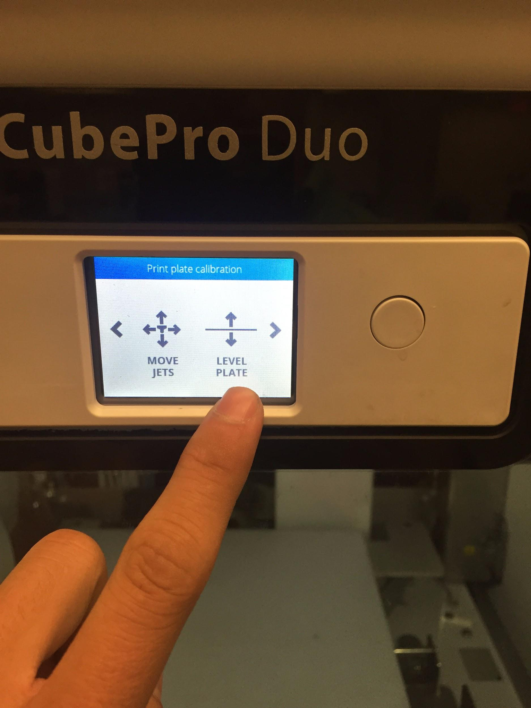
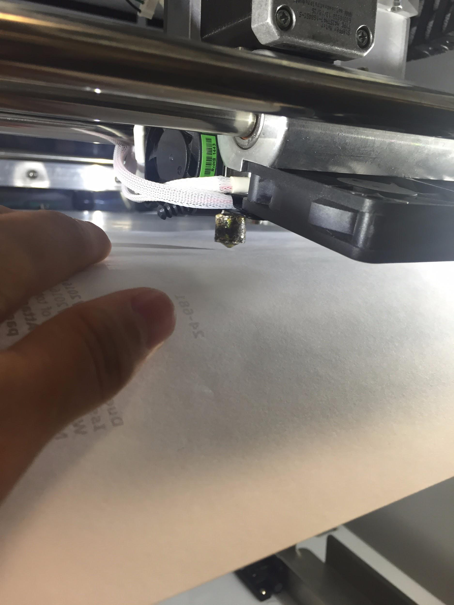

Checking the Plate
Select level plate to ensure that the jet has an even surface to print on.
To adjust the height of the plate turn the knobs underneath the plate. Clockwise lifts the plate and counterclockwise lowers the plate.

To determine if the plate is level place a piece of paper on the plate between the jet and the plate. Adjust the plate until there is some resistance to move the plate. For best results try to create the same level of resistance for each of the three locations.
Click here for the next step.